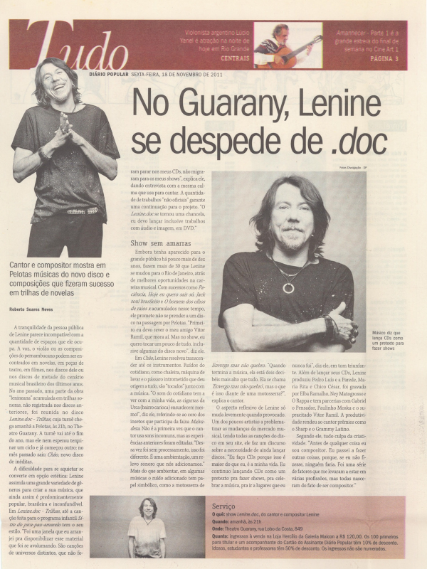

Entrevista: Lenine - Jornalismo (Diário Popular)
Descrição do trabalho
Entrevista com o cantor Lenine feita em 2011 para o jornal Diário Popular, de Pelotas/RS. O Diário Popular é o maior jornal da região sul do Rio Grande do Sul, com 130 anos de história. Trecho inicial do texto:
A tranquilidade da pessoa pública de Lenine parece incompatível com a quantidade de espaços que ele ocupa. A voz, o violão ou as composições do pernambucano podem ser encontrados em novelas, em peças de teatro, em filmes, nos discos dele ou nos discos de metade do cenário musical brasileiro dos últimos anos. No ano passado, uma parte da obra 'lenineana' acumulada em trilhas sonoras, não registrada nos discos anteriores, foi reunida no disco 'Lenine.doc - Trilhas', cuja turnê chega amanhã a Pelotas, às 21h, no Theatro Guarany. A turnê vai até o fim do ano, mas ele nem esperou terminar um ciclo e já começou outro: no mês passado saiu 'Chão', novo disco de inéditas.
